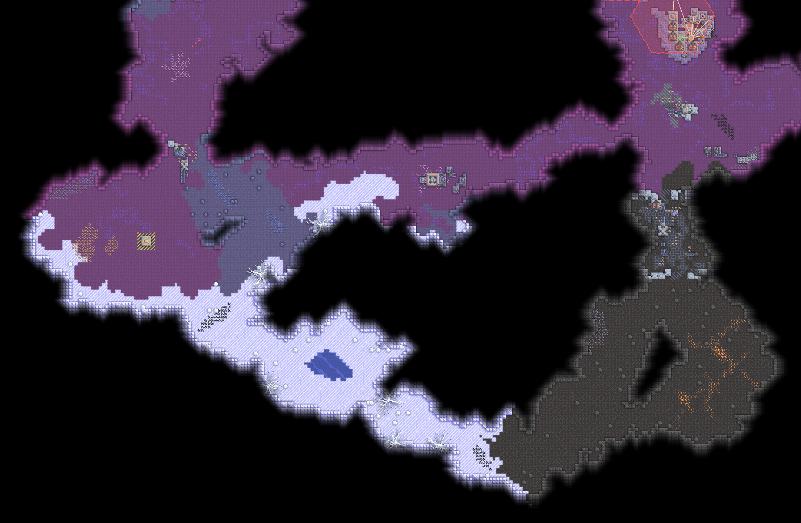
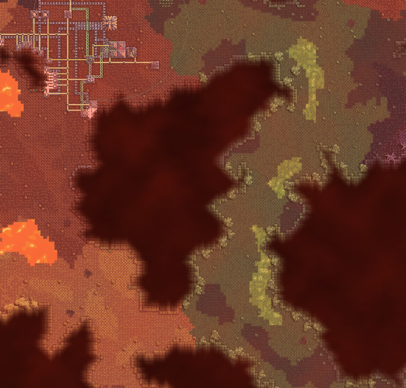
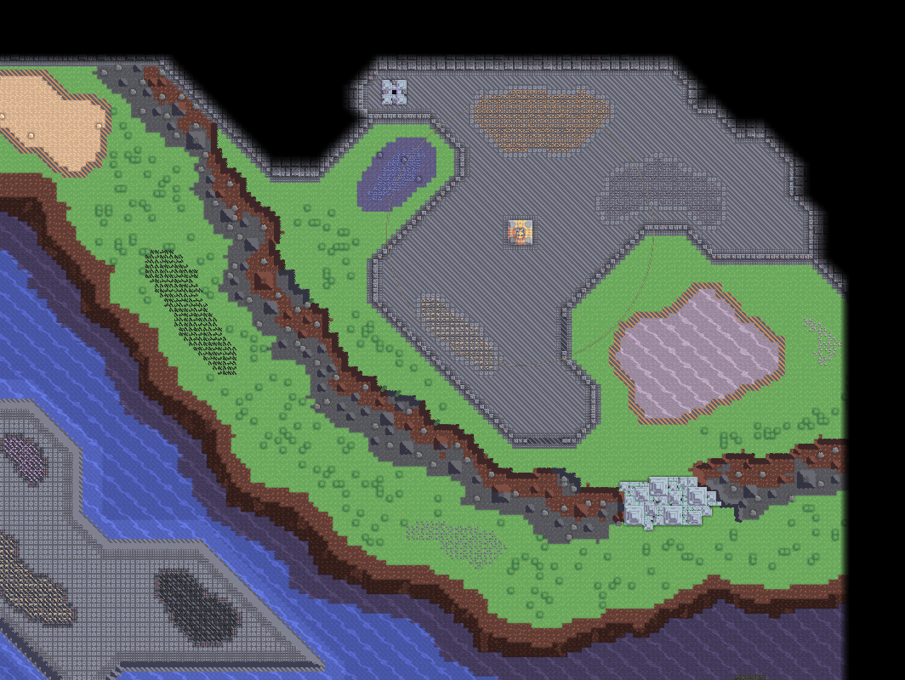
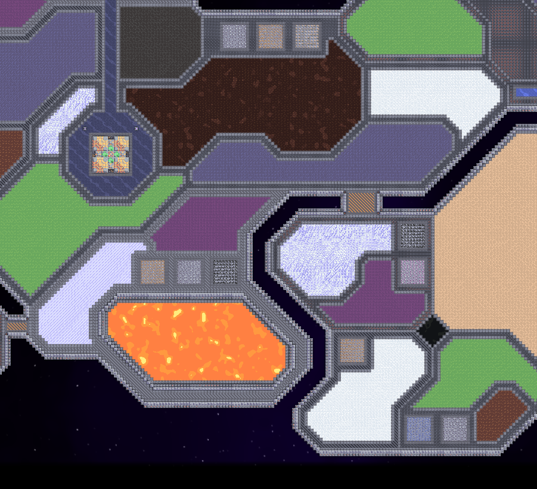
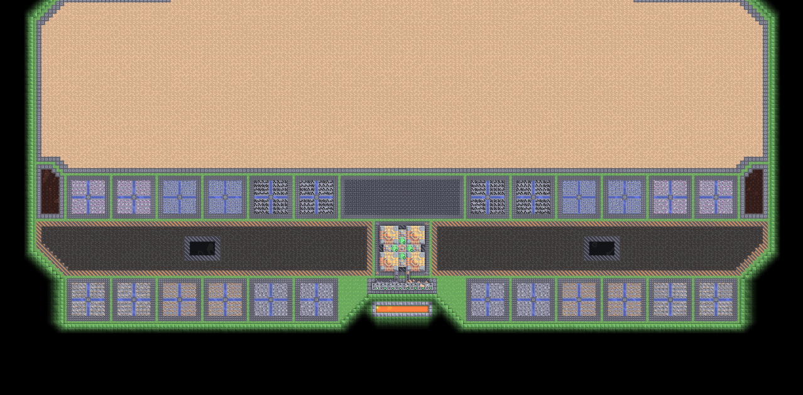
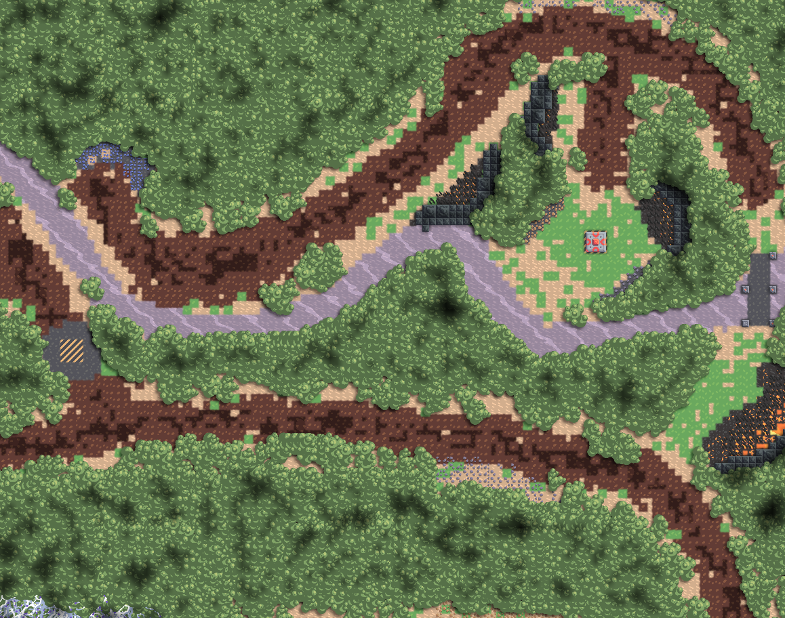
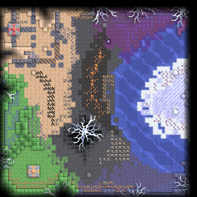
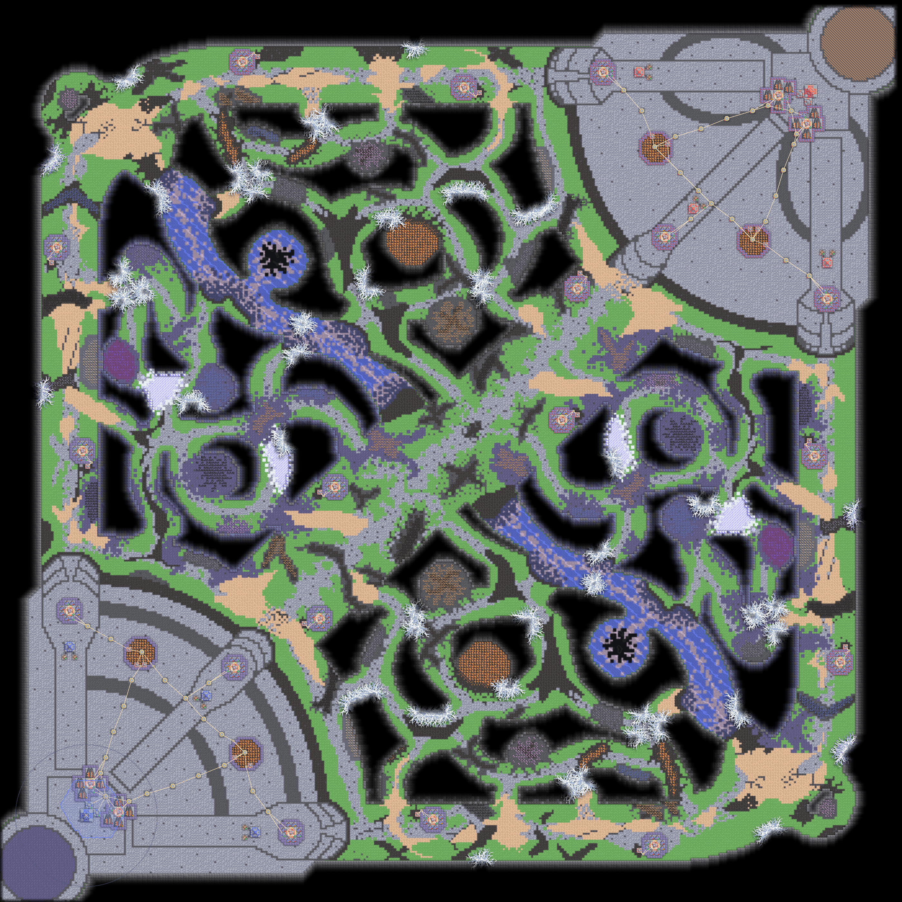
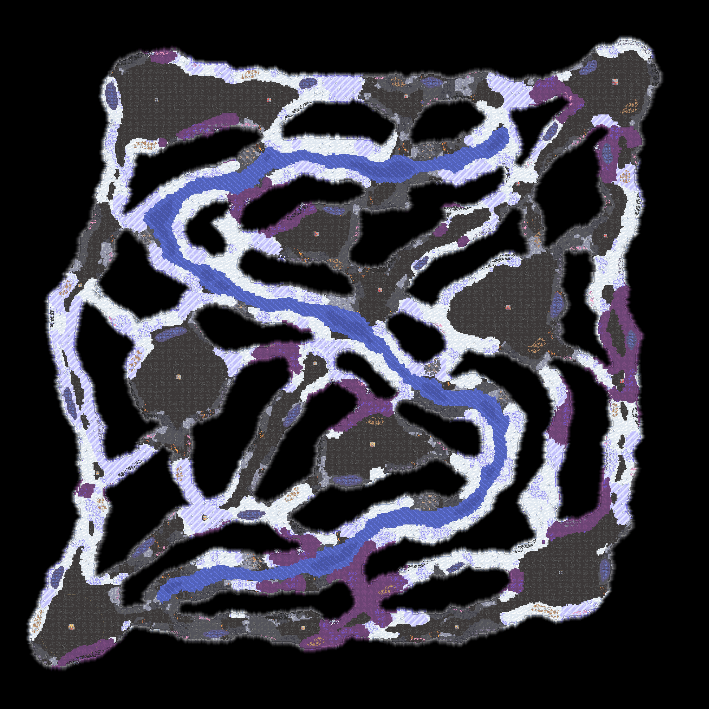
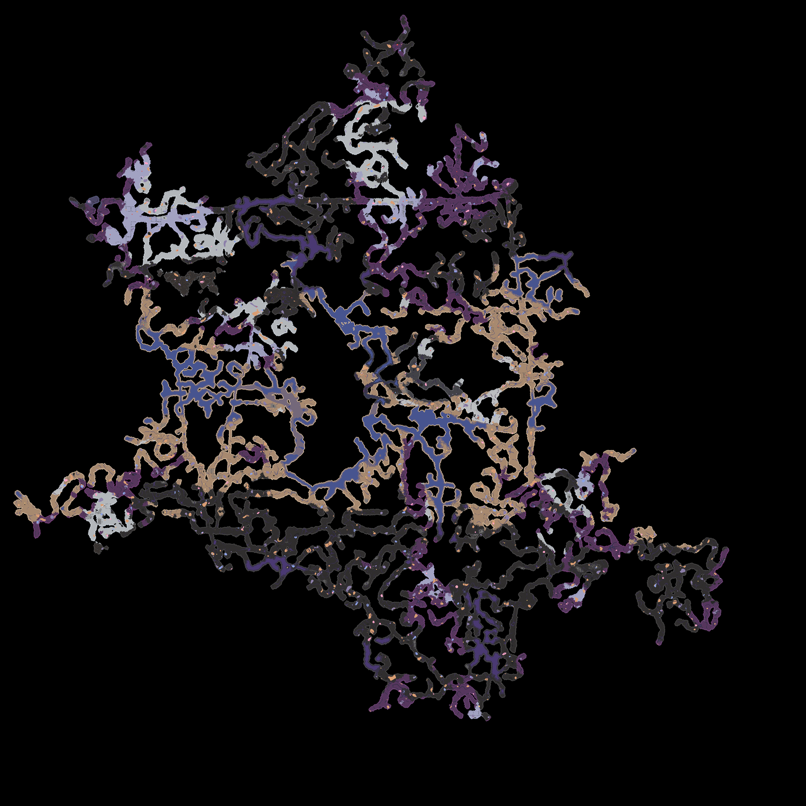

Mindustry
Карти
Mindustry має дуже розвинену систему створення карт. Потужний редактор, велика кількість клітинок довкілля, користувацькі правила та світова логіка дозволяють створити карту у будь якому стилі для будь якого режиму з будь якими механіками та особливостями.
Стилі карт
Карти для mindustry можна створити у багатьох різних стилях завдяки різноманіттю довкілля та інтсрументів редагування.
Ось декілька популярних стилів:
Serpulo
Це стиль планети Серпуло, холодної планети яка повністю захоплена інвазивними спорами. На цих картах є багато спор, льоду, чорного піску, і мають природню геометрію.
Erekir
Це стиль планети Ерекір, спекотної задушливою планети, на якій відбувається багато вулканічної, геотермальної та тектонічної активності. Ці карти мають бага різноманітних кольорових кам'яних пород, геотермальних джерел, токсичних та лавових джерел і так само мають природню реометрію.
Ranked
Цей стиль використовується для змагальних pvp карта. Цей стиль вирізняється невеликим розміром карт, обрененою симетрією, а також поєднанням як і природньої, так і технічної геометрії.
Boxed
Цей стиль походить від старої карти під нахвою Boxfort, звідки і пішла назва стилю. Цей стиль вирізняється технологічною геометрією, ортогональними стінами, чистимим поверхнями, чіткими кордонами між середовищами.
Sandbox
Карти в стилі пісочниці вирізняється тим, що вони мають дуже велику кількість ресурсів, вільної території, та велику площу піснчної поверхні, по суті перетворюючи звичайний ігровий режим на пісочницю. Цей стиль часто перетинається з Boxed стилем, проте він не обов'язково повинен бути таким.
Natural
Природній стиль намагається відтворити природній ландшафт використовуючи реалістичні клітинки та природнью геометрію. Цей стиль може сильно варіюватися залежно від клімату (сніжний, пустельний, помірний, тощо), чи ступенем реалізму (лише природня геометрія, реалістичний ладшафт, використання скель, тощо).
Розмір карт
Карти також можна розрізняти за розміром:




